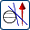
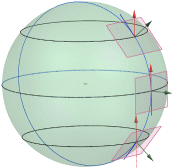

The Highlight Lines command has the following enhancements:
There is a new highlight type called Isoclines .
Isocline curves follow points on a surface whose face normals have the same angle to specified reference vector.

Isocline curves are analysis objects, so they update with any modifications to the underlying geometry.
You can dynamically locate the planar array of uniformly spaced tube lights. You control the number of lights, their spacing, width and fade factor.
Reflection contours update during rotation unless you lock the reflections, in which case no update occurs.
Use the Highlight Lines command to evaluate the quality of a surface using a series of lines highlighted by a number of light sources.
Because highlight lines are analysis objects, they can be reused with other objects or in other parts.
|
Application |
Gateway, Modeling, Shape Studio |
|
Toolbar |
Analyze Shape→Highlight Lines |
|
Menu |
Analysis→Shape→Highlight Lines |
|
Location in dialog box |
Type list |